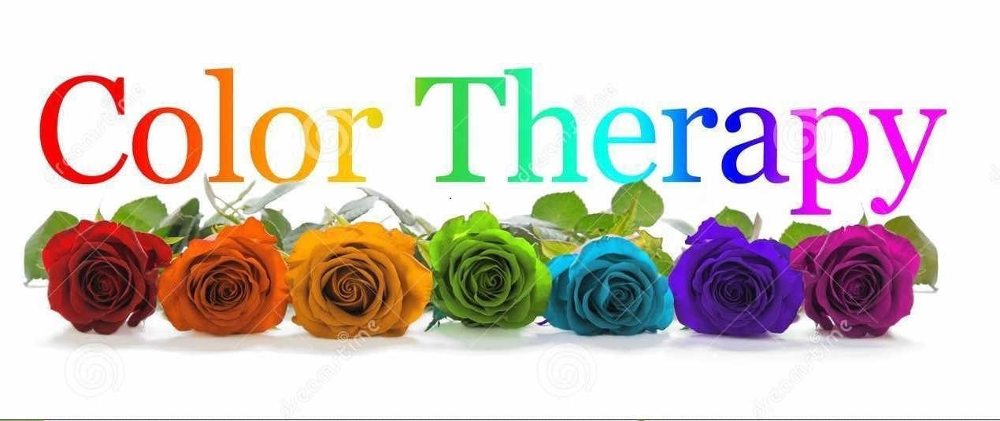
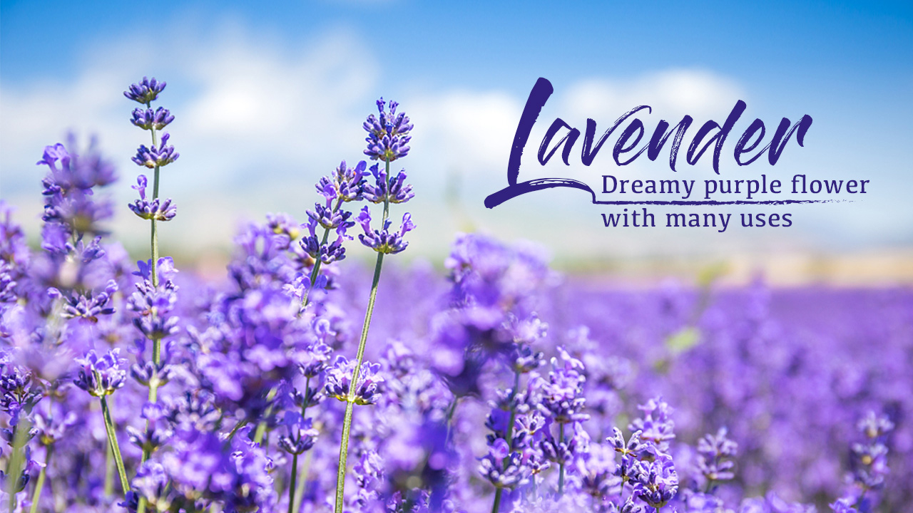
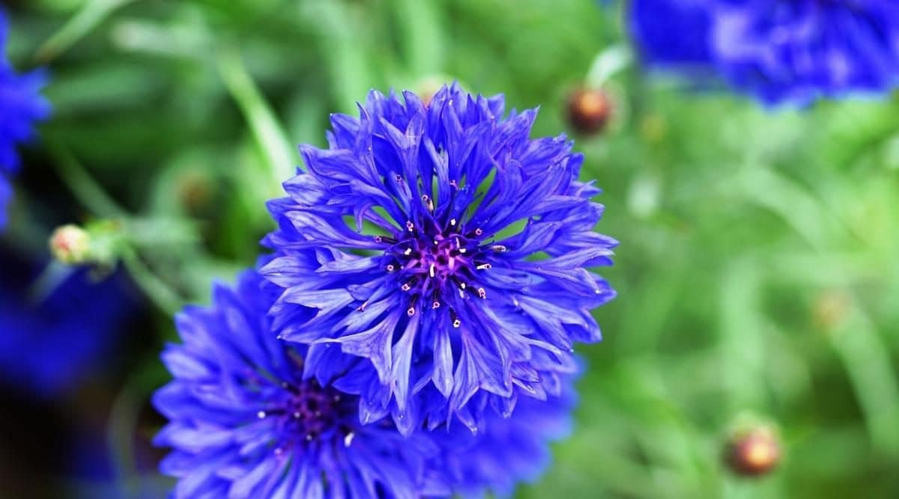

Purple
Click the purple flowers image to read more...

Yellow
Click the yellow flowers image to read more...
Blue
Click the blue flowers image to read more...
Flowers, whether in a bouquet or growing in a pot or flower bed, always have a special way of lifting our spirits. This is due in part to the principles of color therapy, an alternative therapy grounded in the idea that color have powerful effects on our moods. You can combine the wellness benefits of gardening, with some color therapy, to get the best of both worlds! Add a few of these colorful flowers to your Des Moines garden to make you, and your neighbors, smile.
According to the principles of color therapy, certain colors tend to specific emotional responses in people. Blues are calming, greens are tranquil and grounding, yellows are cheerful, red is passionate and romantic, pink promotes kindness and gentleness, and purple inspires creativity and mystery.

PurpleClick the purple flowers image to read more... |
 |
|
|
YellowClick the yellow flowers image to read more... |
BlueClick the blue flowers image to read more... |
 |